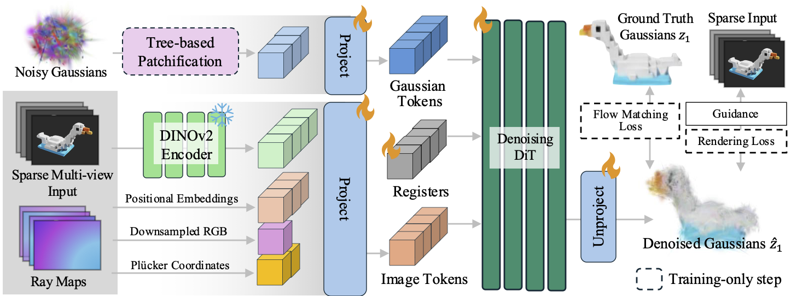
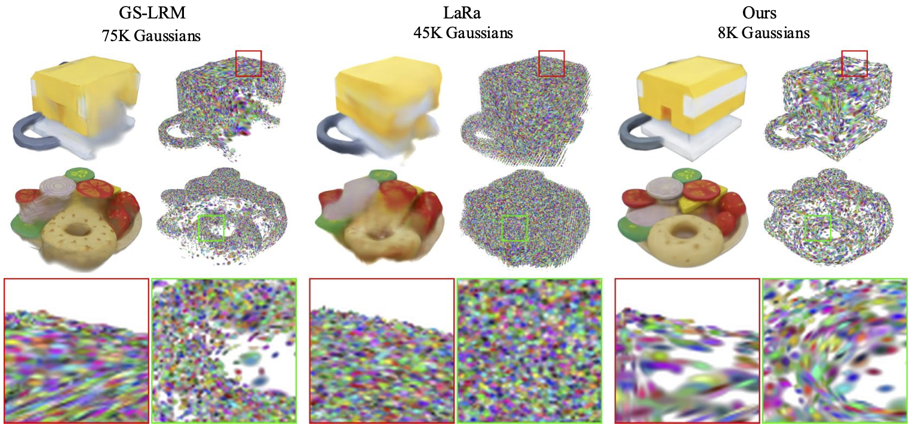

Project Page
Free-Range Gaussians: Non-Grid-Aligned Generative 3D Gaussian Reconstruction
We perform flow matching directly over 3D Gaussian parameters, turning sparse-view reconstruction into a generative process that can synthesize plausible content in unobserved regions.
Abstract
We present Free-Range Gaussians, a multi-view reconstruction method that predicts non-pixel, non-voxel-aligned 3D Gaussians from as few as four images. The model uses flow matching over Gaussian parameters, enabling plausible completions in unobserved regions while avoiding the redundancy of grid-aligned output. To handle larger Gaussian sets efficiently, we introduce a hierarchical patching scheme that groups spatially related Gaussians into joint transformer tokens. We further improve fidelity with timestep-weighted rendering supervision, photometric gradient guidance, and classifier-free guidance.
Method
Sparse-view reconstruction is treated as conditional generation over 3D Gaussian parameters. A diffusion transformer denoises non-grid-aligned Gaussians from noise, while a level-of-detail tree enables coarse-to-fine training and token patchification.

The core idea is to represent the scene with 3D Gaussians that live directly in space, rather than tying each prediction to a pixel- or voxel-aligned grid structure.
Why Non-Grid-Aligned Generation?
Pixel-aligned methods leave holes in unobserved regions, while voxel-aligned regression tends to blur ambiguous content. The generative formulation produces more complete and sharper reconstructions with far fewer Gaussians.

Comparisons
Drag the slider to compare Ours (left, fixed) against baseline methods (right). Switch scenes and select the baseline to inspect failure modes and improvements quickly.
Generation vs. Reconstruction
TRELLIS can produce sharp outputs, but often drifts from sparse-view evidence. Free-Range Gaussians better preserves cross-view consistency.
BibTeX
@article{free_range_gaussians_2026,
title = {Free-Range Gaussians: Non-Grid-Aligned Generative 3D Gaussian Reconstruction},
author = {Ahan Shabanov and Peter Hedman and Ethan Weber and Zhengqin Li and Denis Rozumny and Gael Le Lan and Naina Dhingra and Lei Luo and Andrea Vedaldi and Christian Richardt and Andrea Tagliasacchi and Bo Zhu and Numair Khan},
journal = {arXiv},
year = {2026},
note = {arXiv ID and link to be added}
}